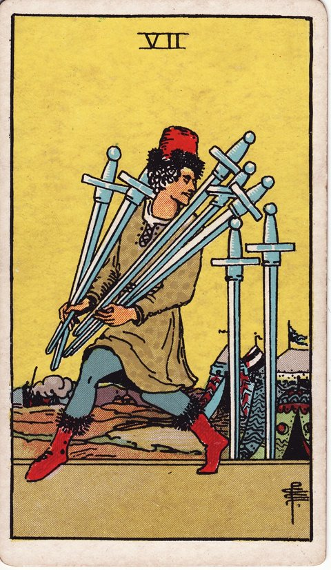

소드 · 타로 카드 백과사전
소드 7

정방향
키워드: 은밀한 전략 · 신중한 회피 · 영리한 접근 · 은근슬쩍 벌이는 수 · 에둘러 가는 셈법 · 숨겨둔 한 수
조언: 정면 승부보다 영리하고 신중한 접근으로 유리한 자리를 만들어보세요.
연애운
솔로
마음을 다 드러내지 않고 조심스럽게 상대를 살피는 시기입니다. 서두르지 않는 태도가 오히려 유리하게 작용할 수 있어요.
커플
갈등을 정면으로 부딪히기보다 우회적으로 풀어가는 것이 나은 시기입니다. 직접적인 지적보다 부드러운 화법으로 마음을 전하면 상대도 방어적이지 않게 받아들일 수 있습니다.
재물운
소비
지출을 드러내지 않고 조용히 계획대로 관리하는 시기입니다. 남에게 보여주기 위한 소비보다 스스로 세운 기준에 집중해보세요.
투자
남들 모르게 조사한 정보로 유리한 투자 기회를 잡을 수 있는 시기입니다. 성급하게 공유하기보다 확신이 설 때까지 조용히 검증하는 편이 유리합니다.
취업운
구직
경쟁자들 모르게 조용히 준비해 유리한 자리를 선점하는 시기입니다. 섣불리 소문내기보다 결과로 보여주는 편이 더 효과적입니다.
이직
이직 사실을 드러내지 않고 신중하게 진행하는 것이 유리한 시기입니다. 확정되기 전까지는 주변에 알리지 않는 것이 뒤탈을 줄이는 방법입니다.
직장운
팀워크
당장 티 내지 않고 물밑에서 협력자를 하나둘 만들어가는 시기입니다. 성급하게 드러내기보다 신뢰를 먼저 쌓아두는 편이 나중에 도움이 됩니다.
개인성과
실적을 미리 자랑하지 않고 결과로 조용히 증명해 보이는 시기입니다. 말보다 결과물이 스스로를 더 확실하게 증명해줄 수 있습니다.
사업운
창업준비
경쟁자보다 앞서기 위해 조용히 전략을 세우는 시기입니다. 구체적인 실행 계획이 서기 전까지는 외부에 드러내지 않는 편이 안전합니다.
운영중
회사 안의 민감한 이슈는 함구한 채 필요한 결정만 조용히 실행에 옮기는 시기입니다. 불필요한 동요를 막으려면 확정된 내용만 단계적으로 공유하는 것이 좋습니다.
학업운
시험준비
남들이 모르는 나만의 효율적인 방법으로 조용히 실력을 쌓는 시기입니다. 남들과 비교하지 않고 자신만의 페이스로 실력을 쌓아가면 됩니다.
진로고민
마음속으로 정한 진로를 아직 누구에게도 밝히지 않고 혼자 다져가는 시기입니다. 확신이 좀 더 쌓인 뒤에 주변에 알려도 늦지 않습니다.
건강운
신체
증상을 대수롭지 않게 여기며 드러내지 않고 넘어가려는 시기입니다. 숨기지 말고 정확히 진단받아보세요.
정신
고민을 아무에게도 털어놓지 못한 채 혼자 삭이고 있을 수 있는 시기입니다. 혼자 끌어안고 있기보다 믿을 만한 사람에게 조금씩이라도 털어놓아보세요.
대인관계운
새로운 인연
새로 알게 된 사람에게 개인적인 이야기는 아직 아끼며 천천히 거리를 좁혀가는 시기입니다. 모든 걸 다 보여주지 않아도 신뢰는 시간을 두고 자연스럽게 쌓입니다.
기존 관계
서운했던 마음을 콕 집어 말하기보다 넌지시 분위기로 전하는 시기입니다. 말보다 작은 배려가 서운함을 더 확실하게 풀어줄 때도 있습니다.
명예운
불필요한 소문에 휘말리지 않도록 말과 행동을 아끼며 이미지를 지켜가는 시기입니다. 굳이 나서서 해명하지 않아도 시간이 지나면 진가가 드러날 수 있습니다.
이사운
떠날 채비를 하고 있다는 사실을 주변에 알리지 않고 물밑에서 일을 진행하는 시기입니다. 모든 절차가 확정된 뒤에 알려도 문제될 것이 없습니다.
자식운
아이 문제를 조용히 지켜보며 신중하게 접근하는 시기입니다. 성급하게 나서기보다 아이가 스스로 마음을 열 때까지 지켜봐주세요.
역방향
키워드: 발각 · 실패한 전략 · 정직한 재시도 · 들통난 꿍꿍이 · 먹히지 않은 꼼수 · 처음으로 돌아간 다짐
조언: 숨기려던 것이 드러났다면 정직한 방식으로 다시 시작해보세요.
연애운
솔로
숨겨온 감정이나 다른 만남이 드러나며 관계에 곤란을 겪을 수 있는 시기입니다. 더 늦기 전에 스스로 먼저 솔직하게 털어놓는 편이 낫습니다.
커플
몰래 감춰온 문제가 드러나며 신뢰에 금이 갈 수 있는 시기입니다. 솔직하게 털어놓는 것이 오히려 관계를 지키는 길입니다.
재물운
소비
숨겨온 지출 내역이 드러나며 곤란한 상황에 놓일 수 있는 시기입니다. 숨기려 하기보다 먼저 솔직하게 밝히는 편이 상황을 덜 악화시킵니다.
투자
은밀히 진행하던 투자가 실패로 드러나며 손실을 감수해야 할 수 있습니다. 혼자 감당하려 하지 말고 손실 규모부터 정확히 파악해보세요.
취업운
구직
다른 곳에 지원한 사실이 현재 회사에 새어나가며 입장이 난처해질 수 있는 시기입니다. 상황이 애매해지기 전에 어떻게 대응할지 미리 정리해두는 것이 좋습니다.
이직
은밀히 진행하던 이직 시도가 발각되며 신뢰에 문제가 생길 수 있습니다. 관계가 더 틀어지기 전에 솔직하게 상황을 설명하는 것이 낫습니다.
직장운
팀워크
물밑에서 조율하던 팀 인사 문제가 새어나가며 분위기가 뒤숭숭해질 수 있는 시기입니다. 소문이 더 퍼지기 전에 사실관계를 명확히 공지하는 것이 혼란을 줄입니다.
개인성과
숨기려던 실수나 편법이 발각되며 신뢰를 잃을 수 있는 시기입니다. 실수를 감추기보다 빠르게 인정하고 수습하는 편이 신뢰 손실을 줄입니다.
사업운
창업준비
은밀히 준비하던 사업 전략이 새어나가며 곤란해질 수 있는 시기입니다. 정보 관리 체계를 다시 점검해 같은 일이 반복되지 않도록 하세요.
운영중
숨겨온 경영상의 문제가 드러나며 신뢰에 타격을 입을 수 있습니다. 더 늦기 전에 문제를 인정하고 투명하게 대응 방안을 밝히는 것이 신뢰 회복의 첫걸음입니다.
학업운
시험준비
요행이나 편법을 쓰려다 들통나며 곤란해질 수 있는 시기입니다. 지름길을 찾기보다 정직하게 실력을 쌓는 편이 결국 더 빠른 길입니다.
진로고민
숨겨온 진로 계획이 드러나며 주변과 마찰이 생길 수 있는 시기입니다. 갈등이 두렵더라도 언젠가는 솔직하게 이야기를 나눠야 할 문제입니다.
건강운
신체
숨겨온 건강 문제가 겉으로 드러나며 더는 미룰 수 없게 되는 시기입니다. 더 미루지 말고 지금이라도 병원을 찾아 정확한 진단을 받아보세요.
정신
감춰온 힘든 감정이 결국 터져 나오며 주변이 놀랄 수 있는 시기입니다. 혼자 삭이기보다 미리 조금씩 털어놓았다면 덜 힘들었을 수도 있습니다.
대인관계운
새로운 인연
적당히 둘러댄 말이 앞뒤가 맞지 않아 상대가 눈치채고 실망할 수 있는 시기입니다. 작은 거짓말도 결국 드러난다는 걸 기억하고 앞으로는 솔직하게 다가가세요.
기존 관계
숨겨온 서운함이 터져 나오며 관계가 흔들릴 수 있는 시기입니다. 쌓아두지 말고 그때그때 솔직하게 마음을 표현하는 습관이 필요합니다.
명예운
감춰뒀던 약점이나 실수가 뜻밖에 새어나가며 이미지에 흠집이 날 수 있는 시기입니다. 이미 드러난 일이라면 변명보다 담담한 인정이 오히려 이미지를 지켜줍니다.
이사운
몰래 알아보던 이사 계획이 예상치 못하게 새어나가 곤란해질 수 있는 시기입니다. 소문이 퍼지기 전에 관련자들에게 먼저 사실을 알리는 것이 낫습니다.
자식운
숨겨온 아이 문제가 드러나며 대응이 시급해질 수 있는 시기입니다. 더 커지기 전에 아이와 마주 앉아 솔직한 대화를 나눠보세요.
같은 슈트: 소드 에이스 · 소드 2 · 소드 3 · 소드 4 · 소드 5 · 소드 6 · 소드 7 · 소드 8 · 소드 9 · 소드 10 · 소드 시종 · 소드 기사 · 소드 퀸 · 소드 킹
홈에서 직접 카드 뽑아보기 ↗